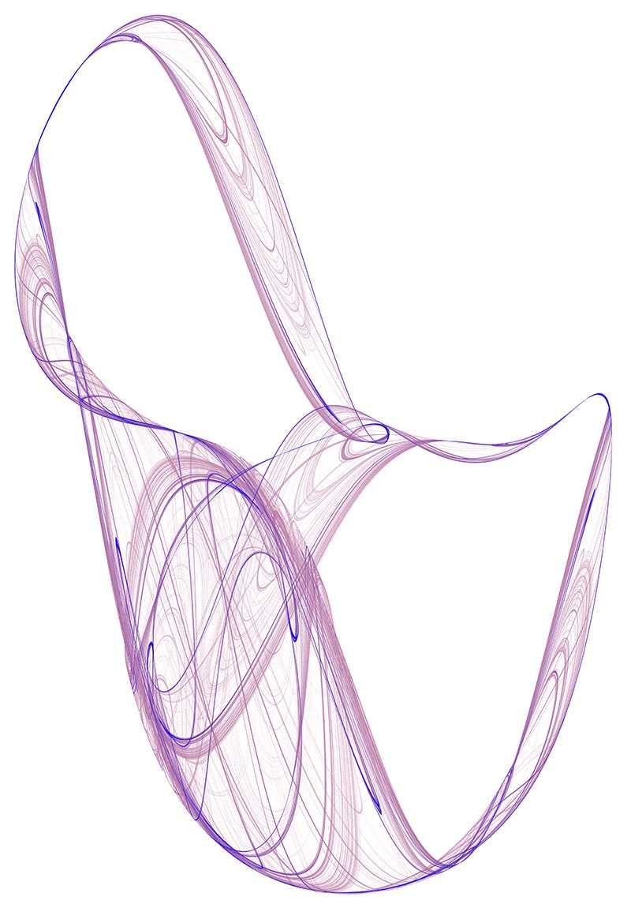
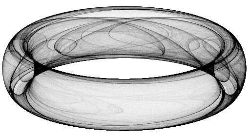

Peter de Jong Attractors
Written by Paul Bourke
January 1989, Images updated February 2014
Original published source in Computer Recreations,
Scientific American, July 1987.
See also "The Pattern Book: Fractals, Art and Nature". 1995.
Editor: Clifford Pickover, chapter by the author titled "Swirl".
xn+1 = sin(a yn) - cos(b xn)
yn+1 = sin(c xn) - cos(d yn)

a = 1.641, b = 1.902, c = 0.316, d= 1.525
a = 0.970, b = -1.899, c = 1.381,d = -1.506
a = 1.4, b = -2.3, c = 2.4, d = -2.1
a = 2.01, b = -2.53, c = 1.61, d = -0.33
a = -2.7, b = -0.09, c = -0.86, d = -2.2
a = -0.827, b = -1.637, c = 1.659, d = -0.943
a = -2.24, b = 0.43, c = -0.65, d = -2.43
a = -2, b = -2, c = -1.2, d = 2
a = -0.709, b = 1.638, c = 0.452, d = 1.740
Question: How are the colour effects here achieved?
Answer:
The main thing happening here is that I don't draw the attractor to the final image.
Rather I create a large grid of 32 bit (int or float) and instead of drawing into
that in colour I evaluate points on the attractor and just increment each cell of
the grid if the attractor passes through it. So it's essentially a 2D histogram for
occupancy. One wants to evaluate the attractor much more/longer than normal in order
to create a reasonable dynamic range and ultimately smooth colour gradients. I then
save this 2D grid, the process of applying smooth colour gradients comes as a secondary
process ... better than trying to encode the right colour during the generation
process. One can even just save the grid as a 16 or 32 bit raw, open in PhotoShop and
apply custom gradient maps there.
Of course this is "just" a density mapping of the histogram and doesn't immediately
allow for colouring based upon other attributes of the attractor path, such as curvature.
But such attributes can be encoded into the histogram encoding, for example the amount
added to a cell being a function of curvature.
Excerpt from "The Pattern Book: Fractals, Art and Nature".
Contribution by Johnny Svensson
A variation:
xn+1 = d sin(a xn) - sin(b yn)
yn+1 = c cos(a xn) + cos(b yn)
The one ring

a = 1.40, b = 1.56, c = 1.40, d = -6.56
Contribution by Robert Rodger
Evaldraw script: attract.kc
|
{kind=link}